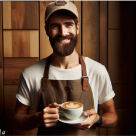
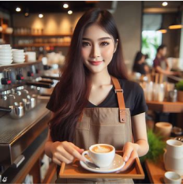
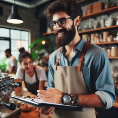
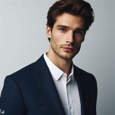

Бариста
Я постоянно совершенствую свои навыки, изучаю новые рецепты и техники приготовления. Это помогает мне расширять ассортимент напитков и предлагать вам что-то новое и удивительное.

Бариста
Я уделяю внимание каждой детали: от измельчения зерен до налива в чашку. Моя цель - сделать вашу чашку кофе идеальной, сочетая аромат, вкус и текстуру.

Бариста
Каждый день я встречаю в нашей кофейне много разных людей и делаю все возможное, чтобы сделать их день чуть лучше, начиная с чашки идеального кофе.

Менеджер
Я обеспечиваю комфорт каждого гостя. Также управляю работой персонала, следя за тем, чтобы обслуживание было на высшем уровне. Для меня — это не только организация и контроль, но и стремление создать особое место.
Бухгалтер
Я помогаю принимать важные решения, предоставляя финансовые отчеты и анализ, чтобы помочь кофейне развиваться. Я обеспечиваю финансовую стабильность, чтобы каждый посетитель чувствовал себя как дома.

Зам. директора
Моя задача - поддерживать открытую коммуникацию с персоналом и участвовать в принятии стратегических решений. Я вдохновляю команду на достижение общих целей и построение успешного будущего кофейни.

Директор
Моё руководство основано на инновациях и креативности. Я обладаю стратегическим мышлением, позволяющим видеть далеко вперёд и разрабатывать эффективные планы для развития бизнеса.